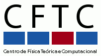

|  |
Reza M. Baram |
2005 - PhD in Physics, University of Stuttgart, Germany
2001 - Master in Science in Physics, IASBS, Zanjan, Iran
1998 - Bachelor in Applied Physics, IUT, Isfahan, Iran
CFTC
Av. Prof. Gama Pinto 2,
1649-003 Lisbon, Portugal
Phone: +351 21 790 4865 (internal:34265)
Fax: +351 21 795 4288
E-Mail: reza@cii.fc.ul.pt
Granular materials
Porous Media
Computational Fluid Dynamics
Synchronization of Complex Networks